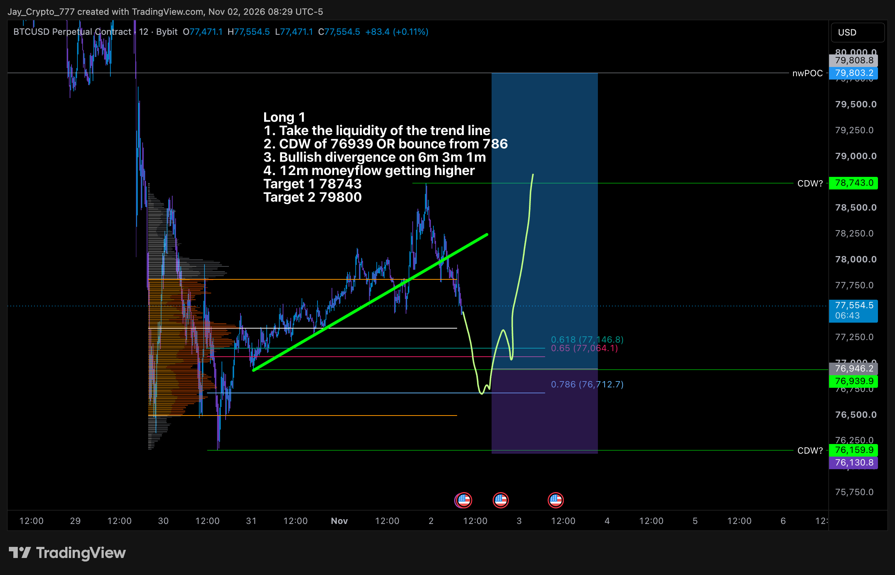
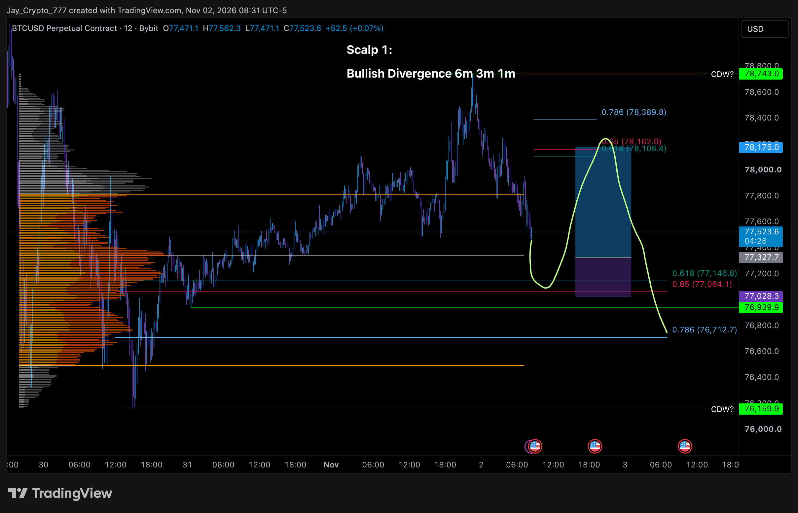
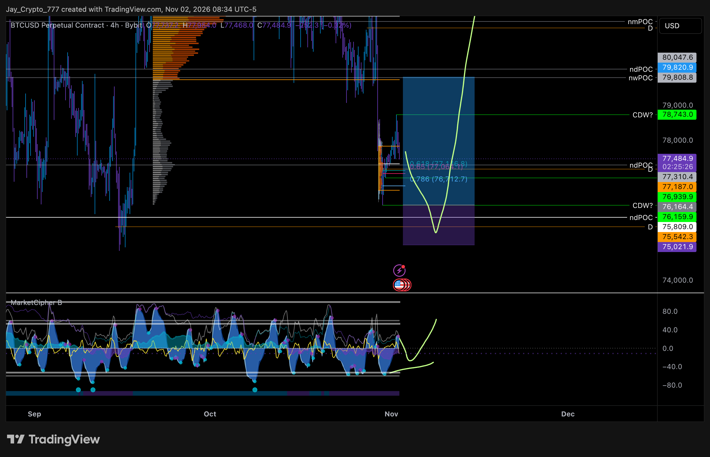
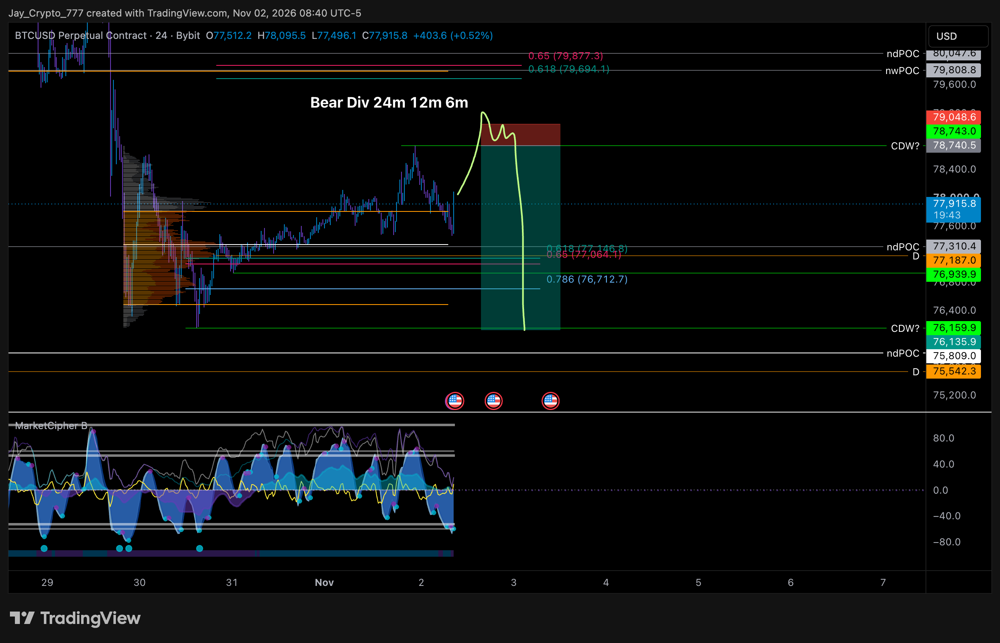
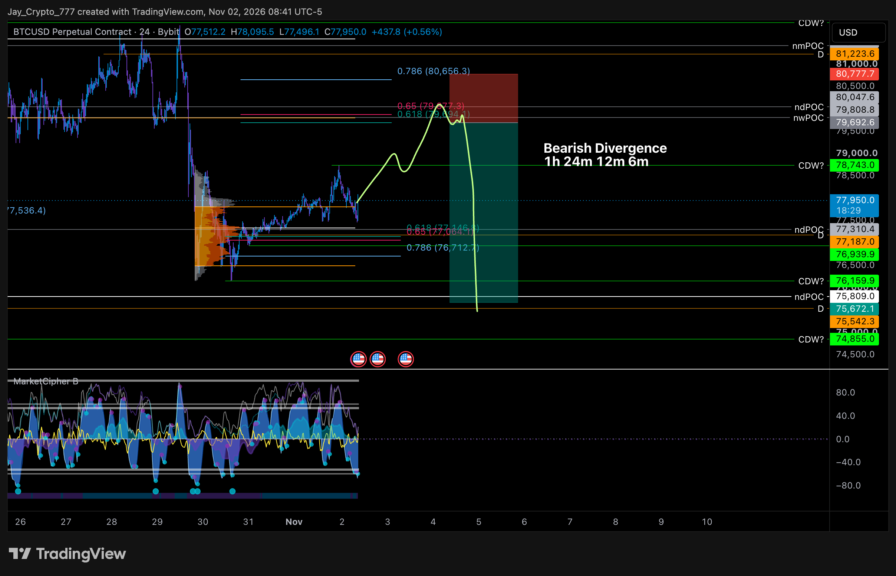
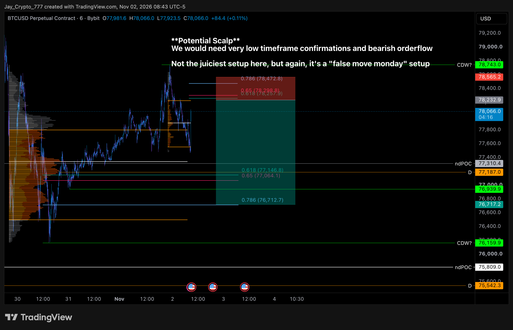

Trades VIP do Cobra. Categoria VIP-trades sem mudança desde ontem: 🟠spy-short, 🟢spy-macro-short, 🔴btc-hedge-short, 🟢btc-long, 🟠sol-long, 🟢ltc-long, 🟢pepe-short (nenhum post novo nesses canais). XRP, AAVE e QNT vêm do cobra-trade-ideas. Domingo 21h: 'fechamento semanal do BTC parece muito altista… fechou acima dos DOIS 0,31, log e normal'. Hoje 11h50: AAVE num bom lugar para long. Adaśko (11h38): fluxo de ETF de 01/11 zerado, Fear & Greed 35–37, taxa de desemprego dos EUA em 06/11 10h30.
HOJE 12h: Sem post novo. LTC ~54,79 (54,70–56,22 desde ontem 19h), ≈−1,6% abaixo da entrada ≈55,7; stop 50,20 longe. Range deviation às ~12h20 (Central Command): 1h com ZONA AZUL ATIVA, preço na borda de baixo da fita; 4h com ZONA AZUL ATIVA, preço abaixo da fita; sem gatilho. O azul apoia o long (não vender aqui), mas o gatilho de alta ainda não veio. | NOVO hoje 09h23–09h28: 'Abrindo um swing long em LTC. Onda corretiva bonita até a demanda e a linha mediana foi tocada.' ENTRY: Market / SL: 50,2 / TP1: 60,4 / TP2: 77,3; operando na BloFin. Ele diz que pegou este swing para ter alguma exposição comprada enquanto espera trades com RR melhor. Gráfico 1W: entrada ≈55,7, stop ≈50,28, TP2 na zona de oferta ≈76–85. Às 06h30 já tinha postado 'LTC chegando no suporte macro' (demanda ≈50–54 na mediana). LTC ~55,86 (55,66–56,05 desde a entrada). RR ≈0,8 até o TP1 e ≈3,9 até o TP2. Range deviation às ~12h10 (Central Command): 1h sem zona (vermelho terminou há ~12 velas), preço no topo/dentro da fita fina; 4h sem zona (azul terminou há ~8 velas), preço na borda de baixo da fita, sem cruzar para cima. Azul recente no 4h apoia o long, mas falta o gatilho. Entrada a mercado: sem alerta.
HOJE 12h: Sem post novo. PEPE ~0,00000478 (máx. 0,0000050 desde ontem 19h), ≈+1,8% a favor do short. Range deviation às ~12h20 (Central Command): 1h com ZONA AZUL ATIVA, preço na borda de baixo/abaixo da fita; 4h sem zona (vermelho terminou há ~17 velas), preço na borda de cima da fita, sem cruzar para baixo. O azul no 1h pede não vender mais aqui no curto prazo; o 4h segue neutro. | NOVO hoje 09h31: 'Vendendo PEPE aqui. O 0,31 é forte e varremos as máximas anteriores.' ENTRY: Market / SL: acima das máximas semanais / TP: mínimas locais; operando na Bitunix. Níveis ≈ lidos do gráfico 1W (stop ≈0,00000571, alvo ≈0,00000318). PEPE ~0,00000487, na entrada. Range deviation às ~12h10 (Central Command): 1h sem zona (vermelho terminou há ~60 velas), preço dentro da fita perto do topo, fraco; 4h sem zona (vermelho terminou há ~17 velas), preço no topo da fita, sem cruzar para baixo. Vermelho recente no 4h apoia o short, mas o gatilho de baixa (fechar abaixo da fita) ainda não veio. Entrada a mercado: sem alerta.
HOJE 12h: Sem post novo; canal segue 🟠. SOL ~94,24, a ≈−10,7% do ≈84,2 desenhado. Sem nível, sem alerta. Range deviation às ~12h20 (Central Command): 1h sem zona (azul terminou há ~3 velas), preço na borda de baixo da fita; 4h com ZONA AZUL ATIVA, preço abaixo da fita, sem gatilho. | HOJE 12h: Sem post novo; canal segue 🟠. SOL ~95,0, a ≈−11% do ≈84,2 desenhado. Range deviation às ~12h10 (Central Command): 1h sem zona (azul terminou há ~75 velas), preço na borda de baixo da fita; 4h com ZONA AZUL ATIVA (esticado para baixo), preço na borda de baixo/abaixo da fita, sem gatilho. Apoia procurar long, mas o plano do Cobra espera preço mais baixo. Sem nível, sem alerta. | NOVO hoje 12h51: o Cobra abriu o canal 🟠sol-long (laranja = ordem limite pendente) com 'Big Solana trade cooking' e um gráfico 1D: contagem de ondas, pitchfork, zona de oferta ≈118–128 e um caminho em amarelo que cai até ≈84,2 (marcado na linha mediana, por volta de dezembro) e depois sobe em zigue-zague até ≈140. Sem entrada, stop ou alvo escritos; ≈84,2 lido do gráfico. SOL ~96,25, a ≈−12,5% até esse nível. Range deviation às ~19h15: 1h sem zona (azul terminou há ~40 velas), preço na borda de baixo da fita; 4h com ZONA AZUL ATIVA (esticado para baixo), preço na parte de baixo da fita, sem gatilho. O azul no 4h apoia procurar long, mas o plano do Cobra espera preço mais baixo. Sem alerta criado (nenhum nível de entrada postado).
Encerrado: o Cobra reentrou no short em 29/10 e foi estopado no 0,31 pela 3ª vez. Hoje 09h10 postou o gráfico 4h do short (entrada ≈81.799, stop ≈82.117, alvo ≈77.230 no 0,31) com 'Olhando agora, ficou ótimo' — o alvo foi atingido depois (mínima 76.500 às 23h de 29/10), mas ele já tinha saído. Canal segue 🔴.
HOJE 12h: Sem post. XRP ~1,251, ~9% a favor do short; stop na entrada 1,3801 intacto (máx. 1,2646 desde ontem 19h). Range deviation às ~12h20 (Central Command): 1h sem zona (vermelho de 1 vela terminou há ~2–3 velas), preço na borda de cima da fita; 4h sem zona (azul terminou há ~2–3 velas), preço na borda de baixo da fita, sem gatilho. Neutro para o short, que está sem risco. | HOJE 12h: Sem post (o canal XRP não aparece mais na categoria VIP-trades). XRP ~1,253, ~9% a favor do short; stop na entrada 1,3801 intacto (máx. 1,26 desde ontem 19h). Range deviation às ~12h10 (Central Command): 1h sem zona (azul terminou há ~80 velas), preço no fundo da fita; 4h sem zona (azul terminou há ~10 velas), preço na borda de baixo/abaixo da fita, sem gatilho de alta. Neutro para o short, que já está sem risco. | 31/10 19h: Sem post. XRP ~1,256, ~9% a favor do short; stop na entrada 1,3801 intacto (máx. 1,2571 desde o meio-dia). Range deviation às ~19h15: 1h sem zona (azul terminou há ~37 velas), preço na borda de baixo da fita; 4h com ZONA AZUL ATIVA (esticado para baixo), preço no fundo da fita. Contra o short: o azul no 4h pede não vender aqui; o stop já está na entrada, então o risco é só devolver lucro.
Encerrado em 21/10 (estopado). Canal não aparece mais.
Ordem retirada em 24/10. O canal 🔴link sumiu da categoria hoje. LINK ~11,24. O alerta antigo COBRA LINK 11,31 perdeu o sentido.
HOJE 12h: NOVO post do Cobra às 11h50 no vip-cobra-updates: 'AAVE agora num bom lugar para comprar' com gráfico 4h (caixa de long verde na parte de baixo, contagem de onda iv, linha de tendência vermelha acima); sem preços legíveis e sem entrada/stop postados. No vip-chat membros perguntaram o stop, sem resposta. AAVE ~131,6 (130,56–137,02 desde ontem 19h), +1,3% acima de 129,94. O semanal fechou acima do 0,31 (≈130,14). Range deviation às ~12h20 (Central Command): 1h sem zona (vermelho terminou há ~30 velas), o preço fechou abaixo da fita e voltou à borda de baixo; 4h sem zona (azul terminou há ~15 velas), cruzou para cima da fita e voltou para dentro, na parte de baixo. O gatilho de alta do 4h perdeu força: neutro/fraco para o long. | HOJE 12h: o Cobra postou às 09h34 no vip-cobra-updates: 'acho que o AAVE fez a onda 4; não entrei nesse trade; procuro longs no 4h porque o AAVE tem grande potencial'. Gráfico 1W: demanda ≈112–128 no 0,31 (≈130), alvo da onda 5 ≈250. AAVE ~138,5 (máx. 141,17), +6,6% acima de 129,94; o fechamento semanal de hoje (21h) precisa ficar acima de ≈130,14. Range deviation às ~12h10 (Central Command): 1h com ZONA VERMELHA ATIVA (esticado para cima), preço acima da fita; 4h sem zona (azul terminou há ~15 velas) e o preço cruzou para cima da fita em velas fechadas: gatilho de alta confirmado no 4h. O 4h apoia o long; o vermelho no 1h pede não comprar perseguindo agora, esperar um recuo. | 31/10 19h: Sem post novo; a entrada segue condicionada ao fechamento semanal (domingo) acima do 0,31 (≈130,14). AAVE ~134,5 (faixa 133,37–136,74 desde o meio-dia), +3,5% acima da entrada. Range deviation às ~19h15: 1h sem zona (vermelho terminou há ~8 velas), preço no topo/acima da fita (leitura parcial, o painel cobre as últimas velas); 4h sem zona (azul terminou há ~4 velas), preço na metade de baixo da fita, sem cruzar para cima. Apoio neutro: falta o gatilho do 4h.
HOJE 12h: Sem post. QNT ~202,6 (196,9–205,5 desde ontem 19h), +7,0% acima da entrada 189,46. Range deviation às ~12h20 (Central Command): 1h com ZONA VERMELHA ATIVA, preço acima da fita (esticado para cima: bom ponto para realizar um pouco, não comprar mais); 4h sem zona, preço acima da fita, sem cruzar para baixo. Apoia o long já aberto. | HOJE 12h: Sem post (canal QNT não aparece mais na categoria). QNT ~198,6 (197,9–203,5 desde ontem 19h), +4,8% acima da entrada 189,46. Range deviation às ~12h10 (Central Command): 1h sem zona (vermelho terminou há ~20 velas), preço dentro da fita, perto do topo; 4h sem zona (azul terminou há ~17 velas), o preço passou acima da fita e recuou para dentro dela, perto do topo. Apoio ao long enfraqueceu um pouco, sem sinal contra. | 31/10 19h: Sem post. QNT foi a 208,67 e está ~202, +6,8% acima da entrada 189,46. Range deviation às ~19h15: 1h: vermelho terminou há ~1–2 velas, preço acima da fita (esticado para cima, bom ponto para realizar um pouco); 4h sem zona, o preço CRUZOU para cima da fita em velas fechadas depois do azul de 1 vela: gatilho de alta confirmado no 4h. Apoia o long.
HOJE 12h: Sem post novo; o canal segue 🟢btc-long mesmo com o stop 76.401 batido ontem (mín. 76.325,98). BTC ~77.426. | Ontem 19h: o BTC caiu a 76.325,98 às 15h (Binance spot), abaixo do stop 76.401 (≈76.418 no gráfico novo): estopou, cerca de −2,6% do médio ≈78.418. O Cobra não postou nada no canal (segue 🟢btc-long). No vip-cobra-updates: 'hack da Binance e ações quebraram hoje, muita pressão no Bitcoin' (16h38) e 'precisamos esperar o fim de semana para ter direção; aí compartilho setups novos' (17h06). Range deviation às ~19h15 (Central Command): 1h sem zona (azul terminou há 1 vela), preço abaixo da fita, sem gatilho; 4h com ZONA AZUL ATIVA (esticado para baixo), preço abaixo da fita, sem gatilho. O azul no 4h pede não vender aqui, mas o gatilho de alta não veio. Hoje 10h06 'Trade update' com gráfico 1D: entrada ≈78.305, stop ≈76.418, alvo ≈88.439 (antes TP2 89.000; extensão até ≈96,4k desenhada). O BTC foi a 76.500 às 23h de 29/10, ~100 dólares acima do stop 76.401: segue vivo. BTC ~77.824, ≈−0,8% do
Encerrado em 29/10 (estopou na entrada depois da parcial). O canal sumiu da categoria hoje.
Encerrado em 29/10 no 0 a 0. O canal sumiu da categoria hoje.
Encerrado em 22/10 (estopou no 0 a 0). Canal não aparece mais.
Encerrado em 27/10. KAS ~0,0334 (Gate), abaixo do stop ≈0,0333 da ideia de 28/10 por pouco (mín. 0,0324). Sem post. Range deviation: n/d (não lido).
Ordem antiga (13/08), sem atualização. Canal agora 🟠spy-short.
Sem atualização desde 17/09. Continua 🟢. Canal agora 🟢spy-macro-short.
HOJE 12h: Sem post novo. APT ~0,629, dentro da zona de compra ≈0,51–0,64. Range deviation: n/d (o Central Command não carrega APT). | HOJE 12h: Sem post novo. APT ~0,638, no topo da zona de compra ≈0,51–0,64. Range deviation às ~12h10 (Central Command): 1h sem zona (vermelho terminou há ~63 velas), preço na parte de baixo da fita; 4h sem zona (azul terminou há ~10 velas), preço na parte de baixo da fita, subindo, sem fechar acima. Apoio neutro, falta o gatilho no 4h. | 31/10 19h: o Cobra postou às ~12h35 no vip-cobra-updates: 'APT rompeu o pitchfork Schiff depois de quicar na linha mediana; procurávamos o pitchfork original para o próximo quique e os algoritmos entraram. Acho que estamos de volta à zona de acumulação.' Sem entrada nem stop. APT ~0,637 (0,629–0,6425 desde o meio-dia), no topo da zona de compra ≈0,51–0,64. Range deviation às ~19h15: 1h sem zona (azul terminou há ~50 velas), preço na borda de baixo da fita; 4h com ZONA AZUL ATIVA (esticado para baixo), preço no fundo da fita, sem gatilho. O azul no 4h apoia procurar long; falta o preço cruzar para cima da fita.
HOJE 12h: ASTER ~0,70, entrada ~72% acima. Sem novidade. | Canal não aparece mais na categoria do Adaśko (só adaśko-updates, vídeos e charts). Ordem de 05/09; não dá para saber se foi cancelada. ASTER ~0,684, entrada ~76% acima.
HOJE 12h: Sem post novo; canal segue 🟠. SOL ~94,24, a ≈−10,7% do ≈84,2 desenhado. Sem nível, sem alerta. Range deviation às ~12h20 (Central Command): 1h sem zona (azul terminou há ~3 velas), preço na borda de baixo da fita; 4h com ZONA AZUL ATIVA, preço abaixo da fita, sem gatilho. | HOJE 12h: SOL ~95,0; entrada 133 a ~40% acima. Range deviation 4h com ZONA AZUL ATIVA, contra o short. | 31/10 19h: SOL ~96,25; entrada 133 a ~38% acima. Range deviation às ~19h15: 4h com ZONA AZUL ATIVA, contra o short.
Canal jayson-btc-ta. HOJE 10h03–10h46: live 'Monday Update' e seis planos novos em BTC perpétuo (Bybit): Long 1, Scalp 1 (long), Long 2 (swing), Short 1, Short 2 e um scalp short de 'false move monday'. Níveis ≈ lidos dos gráficos.
NOVO hoje 10h44: 'uma ideia de scalp não tão suculenta, assumindo que hoje fique de lado e respeite os níveis menos ideais'; pede confirmação no tempo bem curto e fluxo vendedor. Gráfico 6m: entrada ≈78.233, stop ≈78.565, alvo ≈76.717 (0,786). Na Binance spot o BTC tocou 78.254 às 10h45 e caiu: acionou mecanicamente e está ~0,5% a favor (BTC ~77.838). Não sabemos se ele entrou. Range deviation às ~12h20 (Central Command): 1h sem zona (vermelho terminou há ~15 velas), preço voltou para dentro da fita depois de tocar a borda de baixo; 4h sem zona (azul terminou há ~13 velas), preço na metade de baixo da fita, sem gatilho. Neutro. Sem alerta (já acionou).
NOVO hoje 10h29: 'o Long 1 assume que a mínima foi feita na sexta'. Condições escritas: pegar a liquidez da linha de tendência, CDW em 76.939 ou repique no 0,786, divergência de alta no 6m/3m/1m, money flow do 12m subindo. Alvo 1 78.743, alvo 2 79.800 (escritos); entrada ≈76.946 e stop ≈76.131 lidos do gráfico. Não acionou (mín. 77.630 desde 10h29). Range deviation às ~12h20 (Central Command): 1h sem zona (vermelho terminou há ~15 velas), preço voltou para dentro da fita depois de tocar a borda de baixo; 4h sem zona (azul terminou há ~13 velas), preço na metade de baixo da fita, sem gatilho. Neutro.
NOVO hoje 10h32: 'scalp em potencial, a ideia é um falso movimento de segunda, onde nenhum nível real é atingido'. Divergência de alta no 6m/3m/1m. Entrada ≈77.328, stop ≈77.028, alvo ≈78.175 (0,618–0,65). Não acionou (mín. 77.630). Range deviation às ~12h20 (Central Command): 1h sem zona (vermelho terminou há ~15 velas), preço voltou para dentro da fita depois de tocar a borda de baixo; 4h sem zona (azul terminou há ~13 velas), preço na metade de baixo da fita, sem gatilho. Neutro.
NOVO hoje 10h35: 'divergência de alta no 4h, 1h, 24m, 12m e 6m; grande potencial de swing'. Gráfico 4h com Market Cipher B: caixa de long com entrada ≈76.164 (CDW), stop ≈75.022, alvo ≈79.808 (nwPOC); o caminho desenhado vai acima de 80k. Não acionou. Range deviation às ~12h20 (Central Command): 1h sem zona (vermelho terminou há ~15 velas), preço voltou para dentro da fita depois de tocar a borda de baixo; 4h sem zona (azul terminou há ~13 velas), preço na metade de baixo da fita, sem gatilho. Neutro.
NOVO hoje 10h40: 'short 1 é um CDW da máxima de domingo'. Divergência de baixa no 24m/12m/6m. Entrada ≈78.740, stop ≈79.049, alvo ≈76.136. Não acionou (máx. 78.254 desde 10h40). Range deviation às ~12h20 (Central Command): 1h sem zona (vermelho terminou há ~15 velas), preço voltou para dentro da fita depois de tocar a borda de baixo; 4h sem zona (azul terminou há ~13 velas), preço na metade de baixo da fita, sem gatilho. Neutro.
NOVO hoje 10h41: 'short 2 na área de alto volume + resistência de Fibonacci'. Divergência de baixa no 1h/24m/12m/6m. Entrada ≈79.693 (0,618), stop ≈80.778, alvo ≈75.672. Não acionou. Range deviation às ~12h20 (Central Command): 1h sem zona (vermelho terminou há ~15 velas), preço voltou para dentro da fita depois de tocar a borda de baixo; 4h sem zona (azul terminou há ~13 velas), preço na metade de baixo da fita, sem gatilho. Neutro.
HOJE 12h: Sem post sobre este trade. BTC ~77.838 (77.603–78.878 desde ontem 19h). Range deviation às ~12h20 (Central Command): 1h sem zona (vermelho terminou há ~15 velas), preço voltou para dentro da fita depois de tocar a borda de baixo; 4h sem zona (azul terminou há ~13 velas), preço na metade de baixo da fita, sem gatilho. Neutro. | HOJE 12h: Sem post novo do Jayson (último em 29/10). BTC ~78.050 (77.515–78.285 desde ontem 19h). Range deviation às ~12h10 (Central Command): 1h sem zona (azul terminou há ~70 velas), preço na parte de cima da fita depois de atravessá-la; 4h sem zona (o azul terminou há ~9 velas), preço na parte de baixo da fita, sem fechar do outro lado. Para o long: o 1h melhorou, mas o 4h ainda não deu o gatilho de alta; a baixa CONFIRMADA no 1D segue contra. | 31/10 19h: Sem post novo do Jayson. BTC ~77.747 (faixa 77.392–77.796 desde o meio-dia). Range deviation às ~19h15: 1h sem zona (azul terminou há ~33 velas), preço na metade de baixo da fita; 4h com ZONA AZUL ATIVA de novo (esticado para baixo), preço na borda de baixo da fita, sem gatilho. O azul no 4h apoia o long, mas o gatilho de alta não veio; o 1D segue com baixa CONFIRMADA contra.
Entrou na zona 1 (≈77,4–78k) sem postar níveis. O stop do box da zona 1 era ≈76.700 e o BTC foi a 76.650 às 22h e 76.500 às 23h; se ele usou esse stop, estopou (não confirmou). Range deviation às ~12h20 (Central Command): 1h sem zona (azul terminou há ~2–3 velas), preço na borda de baixo da fita, sem cruzar para cima; 4h sem zona (azul terminou há ~1 vela), preço ABAIXO da fita (≈79,5–81,5k), sem gatilho.
O alvo ≈77.258 foi batido às 21h de 29/10 (mínima 76.760, depois 76.500). Resolvido com lucro, se ele entrou.
Acionou às 17h40 de 29/10 e o stop ≈77.943 foi batido às 20h (mínima 77.910, lido do gráfico, por pouco).
A zona ≈77,4–78k foi tocada às 20h de 29/10; o stop do box ≈76.700 foi passado às 22h–23h (mín. 76.500). Níveis aproximados.
HOJE 12h: Sem post sobre este trade. BTC ~77.838 (77.603–78.878 desde ontem 19h). Range deviation às ~12h20 (Central Command): 1h sem zona (vermelho terminou há ~15 velas), preço voltou para dentro da fita depois de tocar a borda de baixo; 4h sem zona (azul terminou há ~13 velas), preço na metade de baixo da fita, sem gatilho. Neutro. | HOJE 12h: Sem post novo do Jayson (último em 29/10). BTC ~78.050 (77.515–78.285 desde ontem 19h). Range deviation às ~12h10 (Central Command): 1h sem zona (azul terminou há ~70 velas), preço na parte de cima da fita depois de atravessá-la; 4h sem zona (o azul terminou há ~9 velas), preço na parte de baixo da fita, sem fechar do outro lado. Para o long: o 1h melhorou, mas o 4h ainda não deu o gatilho de alta; a baixa CONFIRMADA no 1D segue contra. | 31/10 19h: Sem post novo do Jayson. BTC ~77.747 (faixa 77.392–77.796 desde o meio-dia). Range deviation às ~19h15: 1h sem zona (azul terminou há ~33 velas), preço na metade de baixo da fita; 4h com ZONA AZUL ATIVA de novo (esticado para baixo), preço na borda de baixo da fita, sem gatilho. O azul no 4h apoia o long, mas o gatilho de alta não veio; o 1D segue com baixa CONFIRMADA contra.
HOJE 12h: Não acionou (mín. 76.722 desde ontem 19h). Alerta já existe. | Não acionou (mínima 76.500, a ~500 do topo da zona). Entrada a ≈−2,4% do preço. Alerta 76.000 já existe. Range deviation às ~12h20 (Central Command): 1h sem zona (azul terminou há ~2–3 velas), preço na borda de baixo da fita, sem cruzar para cima; 4h sem zona (azul terminou há ~1 vela), preço ABAIXO da fita (≈79,5–81,5k), sem gatilho.
HOJE 12h: Não acionou (mín. 76.722 desde ontem 19h). Alerta já existe. | Não acionou. Entrada ≈74.868 a −3,8% do preço. Alerta já existe. Range deviation às ~12h20 (Central Command): 1h sem zona (azul terminou há ~2–3 velas), preço na borda de baixo da fita, sem cruzar para cima; 4h sem zona (azul terminou há ~1 vela), preço ABAIXO da fita (≈79,5–81,5k), sem gatilho.
ATUALIZAÇÃO 19h: acionou e estopou às 17h40 (o BTC passou de ≈79.235 a abaixo de ≈78.852). Range deviation às 19h: n/d (o Central Command não abriu, conexão recusada). "Também me interessam os trades de hoje". Entrada ≈79.241–79.235, stop na zona roxa ≈79.078–78.852, alvo no topo da caixa ≈81.354 (o caminho desenhado vai mais alto). Não acionado (mínima desde 06h 79.506). Vai contra o 1D (baixa), mas a divergência de alta está FORMANDO (não confirmada) no 4h, 12h e 1D. 28/10: não acionou (mínima 24h 80.288). Substituído pelo Long 1 de hoje em ≈79.245, com stop mais largo. Range deviation às ~12h05–12h12 (Central Command): 1h sem zona (azul terminou há ~5–6 velas) e o preço ACIMA da fita, gatilho de alta há ~3–4 velas; 4h sem zona (azul terminou há ~13 velas), preço dentro da fita (metade de baixo/meio), gatilho ambíguo. Apoia longs (gatilho de alta no 1h) e vai contra os shorts no curto prazo; o 4h ainda não confirmou.
ATUALIZAÇÃO 19h: às 18h30 o BTC (Binance spot) subiu até 81.300, passando pela entrada ≈80.955 e encostando no stop ≈81.297 (lido do gráfico, por isso aproximado). Em níveis aproximados não dá para cravar, mas o mais provável é que tenha acionado e estopado (−1R). O Jayson não postou nada depois do meio-dia. BTC agora ~80.916.
ATUALIZAÇÃO 19h: o BTC subiu até 81.971 às 13h05, acima do stop ≈81.903: estopou. Range deviation às 19h: n/d (o Central Command não abriu, conexão recusada). Entrada ≈81.577, stop ≈81.903, alvo ≈77.620–77.472 (níveis lidos do gráfico). Acionou na madrugada de 28/10. A máxima foi 81.823 às 05h e 81.788 às 17h, sempre abaixo do stop ≈81.903, então segue aberto se ele entrou. BTC ~81.282, ~0,4% a favor (era ~1,1% ao meio-dia). Ele não confirmou a entrada. 29/10 12h: stop ≈81.903 intacto (máx. 81.537). BTC ~81.252, ~0,4% a favor. Range deviation às ~12h05–12h12 (Central Command): 1h sem zona (azul terminou há ~5–6 velas) e o preço ACIMA da fita, gatilho de alta há ~3–4 velas; 4h sem zona (azul terminou há ~13 velas), preço dentro da fita (metade de baixo/meio), gatilho ambíguo. Vai contra o short no curto prazo (gatilho de alta no 1h); o 4h ainda não confirmou.
A entrada ≈81.960 foi tocada por pouco em 29/10 13h05 e o alvo ≈77.620 foi batido às 21h. Resolvido com lucro, se a ordem pegou.
Entrada no 0,618 ≈82.629 (0,65 em ≈82.814), stop ≈83.777, alvo ≈77.620–77.472. Perto do Short 1 do VWAP (≈82.300) de 22/10. A favor do 1D. Não acionado; entrada +6,2% acima do preço. Range deviation 4h: preço abaixo da fita, azul recente (contra vender aqui).
Sem post novo do Jayson desde 23/10 10h25. O stop ≈80,6k foi atingido em 23/10 (BTC caiu até 79.833), então esse long deve ter sido estopado; ele não confirmou. As próximas áreas que ele citou são os longs ≈79.656 e ≈77.743.
HOJE 12h: Sem post sobre este trade. BTC ~77.838 (77.603–78.878 desde ontem 19h). Range deviation às ~12h20 (Central Command): 1h sem zona (vermelho terminou há ~15 velas), preço voltou para dentro da fita depois de tocar a borda de baixo; 4h sem zona (azul terminou há ~13 velas), preço na metade de baixo da fita, sem gatilho. Neutro. | HOJE 12h: Sem post novo do Jayson (último em 29/10). BTC ~78.050 (77.515–78.285 desde ontem 19h). Range deviation às ~12h10 (Central Command): 1h sem zona (azul terminou há ~70 velas), preço na parte de cima da fita depois de atravessá-la; 4h sem zona (o azul terminou há ~9 velas), preço na parte de baixo da fita, sem fechar do outro lado. Para o short: sem sinal novo, a parcial já foi feita. | 31/10 19h: Sem post novo do Jayson. BTC ~77.747 (faixa 77.392–77.796 desde o meio-dia). Range deviation às ~19h15: 1h sem zona (azul terminou há ~33 velas), preço na metade de baixo da fita; 4h com ZONA AZUL ATIVA de novo (esticado para baixo), preço na borda de baixo da fita, sem gatilho. O azul no 4h pede não aumentar o short aqui.
A favor do 1D. Alerta JAYSON 82.300 já existe. Não acionado; entrada +5,8% acima do preço. Range deviation 4h: preço abaixo da fita, azul recente (contra vender aqui).
Entrada ≈83.200, stop ≈84.360, alvo ≈76.050. A favor do 1D. Alerta JAYSON 83.200 já existe. Não acionado; entrada +6,9% acima do preço. Range deviation 4h: preço abaixo da fita, azul recente (contra vender aqui).
Entrada ≈84.300–84.670, stop ≈85.830, alvo ≈79.700. A favor do 1D. Alerta JAYSON 84.300 já existe. Não acionado; entrada +8,6% acima do preço. Range deviation 4h: preço abaixo da fita, azul recente (contra vender aqui).
Virou o short aberto de 21/10. Os três alvos (≈79.641/79.240/77.536) já foram batidos (mínima 76.500 em 29/10).
Virou o short aberto de 21/10. Os três alvos (≈79.641/79.240/77.536) já foram batidos (mínima 76.500 em 29/10).
Entrada ≈87.500, stop ≈90.034, alvo ≈69.262. A favor do 1D. Alerta JAYSON 87.500 já existe. Não acionado; entrada +12,4% acima do preço. Range deviation 4h: preço abaixo da fita, azul recente (contra vender aqui).
Scalp com divergência de alta no 3m e 1m. Entrada ≈83.045 e stop ≈82.696 lidos do gráfico; alvo 84.225 escrito no post (o gráfico mostra ≈84.365). O BTC chegou a 84.225 às ~11h35, então o alvo foi batido. Sem alerta (já resolvido). Ele também postou um link de gráfico ao vivo às 10:32, sem níveis.
Antigo; o alvo ≈77.414 foi batido em 29/10, mas ele não entrou nesse nível.
O alvo ≈84.356 foi batido em 21/10 às ~11h45 (máxima 84.798). A zona de entrada foi tocada em 19/10 sem bater o stop; não dá para saber se ele entrou (pedia divergência de alta no 12m/6m/3m).
ATUALIZAÇÃO 19h: o BTC caiu abaixo do stop ≈78.937 às 17h40: estopou. Range deviation às 19h: n/d (o Central Command não abriu, conexão recusada). O BTC passou pela entrada ≈79.656 ontem (mínima 79.221) sem bater o stop ≈78.937 e está em ~80.793 (+1,4%). Ele não confirmou se entrou. Alvo ≈86.718. Contra o 1D (Baixa ✓). Range deviation às ~12h05–12h12 (Central Command): 1h sem zona (azul terminou há ~5–6 velas) e o preço ACIMA da fita, gatilho de alta há ~3–4 velas; 4h sem zona (azul terminou há ~13 velas), preço dentro da fita (metade de baixo/meio), gatilho ambíguo. Apoia longs (gatilho de alta no 1h) e vai contra os shorts no curto prazo; o 4h ainda não confirmou.
HOJE 12h: Sem post sobre este trade. BTC ~77.838 (77.603–78.878 desde ontem 19h). Range deviation às ~12h20 (Central Command): 1h sem zona (vermelho terminou há ~15 velas), preço voltou para dentro da fita depois de tocar a borda de baixo; 4h sem zona (azul terminou há ~13 velas), preço na metade de baixo da fita, sem gatilho. Neutro. | HOJE 12h: Sem post novo do Jayson (último em 29/10). BTC ~78.050 (77.515–78.285 desde ontem 19h). Range deviation às ~12h10 (Central Command): 1h sem zona (azul terminou há ~70 velas), preço na parte de cima da fita depois de atravessá-la; 4h sem zona (o azul terminou há ~9 velas), preço na parte de baixo da fita, sem fechar do outro lado. Para o long: o 1h melhorou, mas o 4h ainda não deu o gatilho de alta; a baixa CONFIRMADA no 1D segue contra. | 31/10 19h: Sem post novo do Jayson. BTC ~77.747 (faixa 77.392–77.796 desde o meio-dia). Range deviation às ~19h15: 1h sem zona (azul terminou há ~33 velas), preço na metade de baixo da fita; 4h com ZONA AZUL ATIVA de novo (esticado para baixo), preço na borda de baixo da fita, sem gatilho. O azul no 4h apoia o long, mas o gatilho de alta não veio; o 1D segue com baixa CONFIRMADA contra.
Sem post novo; substituído pelo short swing de 21/10 (≈87.500). BTC ~81,9k. Não acionado; entrada +10,0% acima do preço. Range deviation 4h: preço abaixo da fita, azul recente (contra vender aqui).
O BTC caiu abaixo do stop ≈77.500 às 21h de 29/10. Ele nunca confirmou se ainda estava nesse long.
Zona do long de 80.250; o stop ≈77.500 foi batido em 29/10.
Front-runado; sem mudança. Não acionado; entrada +6,8% acima do preço. Range deviation 4h: preço abaixo da fita, azul recente (contra vender aqui).
Plano antigo; o BTC passou por 84.300 em 21/10 e caiu depois (mínima 79.833 hoje). Não acionado; entrada +8,3% acima do preço. Range deviation 4h: preço abaixo da fita, azul recente (contra vender aqui).
Histórico; encerrado em 12/10.

Jayson, BTC 12m (02/11 10h29): Long 1 ≈76.946, stop ≈76.131, alvos 78.743 / 79.800

Jayson, BTC 12m (02/11 10h32): Scalp 1 long ≈77.328, stop ≈77.028, alvo ≈78.175

Jayson, BTC 4h (02/11 10h35): Long 2 swing ≈76.164, stop ≈75.022, alvo ≈79.808

Jayson, BTC 24m (02/11 10h40): Short 1 ≈78.740, stop ≈79.049, alvo ≈76.136

Jayson, BTC 24m (02/11 10h41): Short 2 ≈79.693, stop ≈80.778, alvo ≈75.672

Jayson, BTC 6m (02/11 10h44): scalp short ≈78.233, stop ≈78.565, alvo ≈76.717 (acionou 10h45)